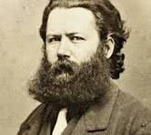

Yes, it was he who first called my attention to my aptitude for making some remarkable discovery in photography.
Aha! it was Relling!
Ah! I have been so intensely happy over this. Not so much for the invention or for myself, but because Hedvig believed in it—with all the strength and might of a child's mind.
Can you really believe that Hedvig would be false to you?
Back to the first page
Henrik Ibsen